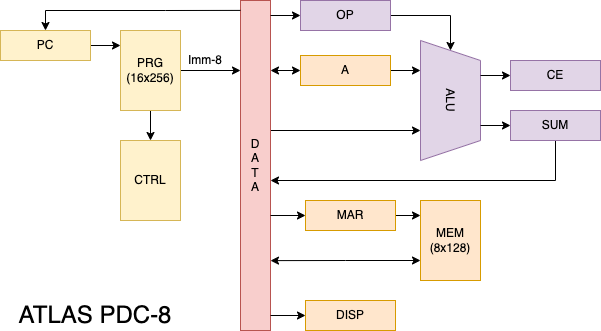
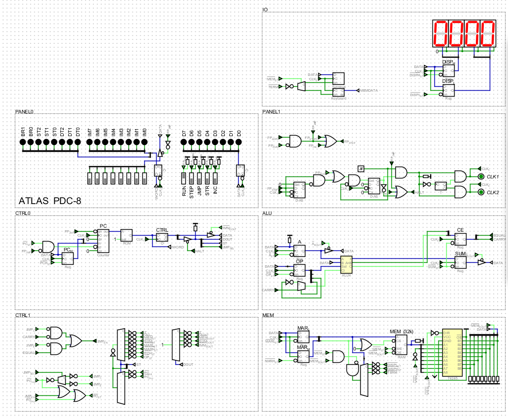
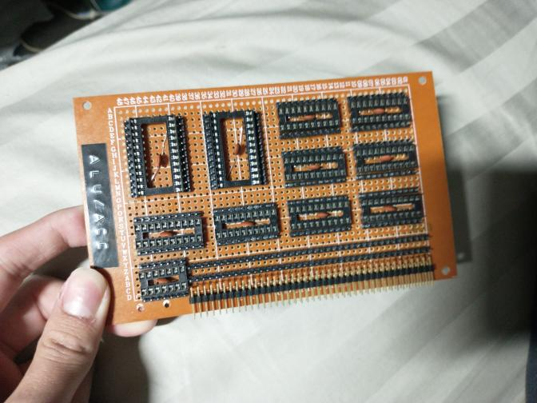

Techno-Sorcery
"Man is still the most extraordinary computer of all."
An 8-bit Harvard architecture CPU centered around a single move instruction.
ATLAS PDC-8
The ATLAS PDC-8 is a homebrew computer of my own design, which is being built as my high school senior project.
Links
Github
YouTube fibonacci demo
Constraints
The initialism "PDC" stands for "Personal Data Controller, which harkens back to old-school computer names like "Programmable Data Processor" (PDP) and "Universal Automatic Computer (UNIVAC). Indeed, the PDC-8 is meant to somewhat represent a low-cost, consumer-oriented minicomputer from the early 1970s.
For the sake of my own time and sanity, it has been designed to be simple and easy to assemble. At the same time, I've designed it to be capable of running complex programs (not a 4-bit "toy" machine with 16 bytes of memory), and to have a high degree of expandability.
Architecture

The PDC-8 is a Harvard architecture machine, with program memory separate from data memory, and no provisions for randomly reading from/writing to program memory. This has been done for the sake of simplicity, as it greatly reduces the amount of neccessary decoding and control logic.
It features several registers, which can be directly manipulated by the programmer.
- ACC - Accumulator, general purpose register
- MAR - Memory address register, points to location in data memory
- OP - Operation, sets ALU operation mode
- SUM - Sum, stores ALU result
- PC - Program counter, points to location in program memory
- DISP - Display, holds value to be shown on 7-segment display
- CE - Flags, holds CARRY and EQUALS flag generated by ALU
The PDC-8 makes use of two 74LS181s as the ALU. The mode and carry select bits are sourced from the OP register, meaning that the programmer can use any available arithmetic/logical mode by writing an immediate value to it. Results must be saved in the SUM register before they can be outputted to the data bus and stored somewhere else. The accumulator acts as the first ALU operand, whereas the data bus acts as the second operand.
The ALU produces two flags, EQUALS and CARRY, each time a calculation is stored in the SUM register. These flags can be conditionally checked, and used to determine if a particular instruction executes or not. This means that the PDC-8 is indeed Turing complete and therefore worthy of being considered a "real" computer.
Both the program counter and memory address register are 8-bits wide, allowing the PDC-8 to access up to 256 bytes of program memory, and 256 bytes of data memory. The MAR holds the current data memory address and, since there is no dedicated address bus nor address control pins, it must be written to in a separate instruction each time the programmer desires to access a different address.
Instruction set
The PDC-8 follows a simple transport triggered architectural model, as all computation is performed as a result of data being moved around by the programmer. Since the only available instruction transfers data between registers and checks a selected condition, it could also be considered an OISC (one instruction set computer).
Although only having a single instruction may seem like a big limitation, the PDC-8's ISA has proven to be surprisingly efficient and versatile. Since each instruction only takes a single clock cycle to execute, many operations take less cycles on the PDC-8 than they would on a more complex machine. At the same time, being able to move data between any two registers allows for the progammer to implement subroutine jumps, stack operations, and a whole host of other advanced features.
Each instruction is made up of an 8-bit immediate value, and an 8-bit control word, which is outlined below. This makes for a 16-bit wide program memory.
CC SSS DDD XXXXXXXX
Condition select
00 - None
01 - Execute if CARRY = 1
10 - Execute if EQUALS = 1
11 - Execute if EQUALS != 1
Store select
000 - None
001 - ACC store
010 - MEM store
011 - SUM store
100 - OP store
101 - PC store (jump)
111 - DISP store
Data out select
000 - None
001 - ACC data out
010 - MEM data out
011 - SUM data out
100 - IMM data out
X = 8-bit immediate value
For instance, if I wanted to add 1 and 3 and store it in the accumulator, I'd first set the OP register to an immediate value, telling the ALU to add without a carry. I'd then store the immediate value 1 in ACC, output the immediate value 3 to the data bus and store the ALU result in SUM, and finally output SUM to the data bus and store that value in ACC
00101100 00001001 - SET OP TO ADD
00001100 00000001 - LD #1 INTO ACC
00011100 00000011 - OUTPUT #3, STORE ACC+3 INTO SUM
00001011 00000000 - STORE SUM INTO ACC
Conditional checks simply prohibit or allow the execution of an instruction, depending on the value of the selected test flag. Any PDC-8 instruction can be executed conditionally, including jumps (which really just consist of storing the data bus to the program counter).
Implementation

I created a logical simulator of the PDC-8's architecture in the amazing program hneemann digital, which is pretty much a modernized derivative of logisim. It has come in handy when deciding new elements to implement/change, since I can mock everything up on my computer, as well as when testing programs I've written. If you would like to try it out for yourself, you can download a copy of the entire project in the Github repository linked at the top of this page.

I've also started work on building a physical implementation of the PDC-8 that I can use as my high school senior project. It is being built across four individual perfboard cards, which will slot into a custom 6 slot backplane. I am using the wire wrap technique as opposed to making PCBs or directly soldering down wires, as it is cheap, easily modifiable, and doesn't require me to learn how to use any CAD software. It also allows me to test everything as I go, which can't be said for a batch of PCBs ordered from China.
© Hayden Buscher ~ 2022